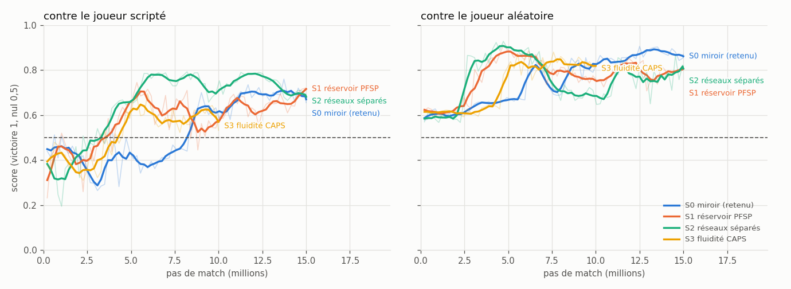
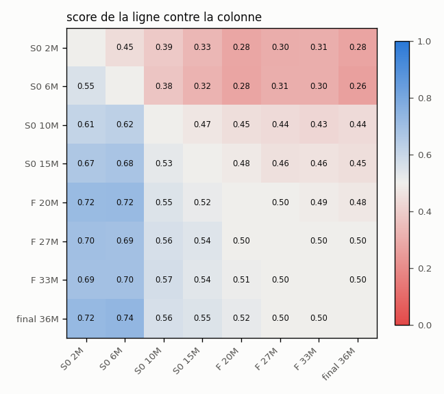
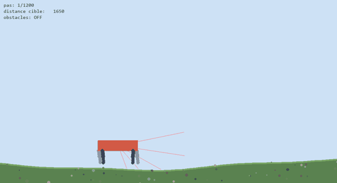

Un terrain, deux joueurs, aucune règle donnée
Pour que deux agents apprennent l'un contre l'autre, il fallait un jeu rapide à simuler. J'ai écrit le moteur moi-même, en NumPy, vectorisé : 128 matchs avancent en parallèle, et 500 matchs complets se jouent en 0,4 seconde sur un portable. Terrain aux proportions FIFA, joueurs à vitesse et accélération bornées, ballon freiné par frottement, possession, tacle probabiliste au contact et collisions entre joueurs.
Les règles du match sont volontairement minimales :
- les deux joueurs apparaissent n'importe où sur le terrain ; chacun marque dans le but d'en face ;
- un match dure 20 secondes, puis c'est un match nul ;
- un ballon sorti revient à l'adversaire ;
- le porteur du ballon court moins vite, et un ballon frappé à plus de 12 m/s ne peut pas être contrôlé ;
- à chaque dixième de seconde, un joueur choisit une direction de course parmi 16, et éventuellement une frappe parmi 24 directions.
Une seule politique pour les deux camps
Chaque joueur voit le terrain dans son propre repère : le joueur 2 le voit tourné de 180°. Le même réseau joue donc les deux camps, et chaque match fournit deux flux d'apprentissage.
La récompense finale est à somme nulle : ±1 pour un but, 0 pour un match nul. Marquer étant très rare au début, j'y ajoute une récompense d'exploration dense — aller au ballon, le faire progresser, le garder, éviter de le sortir — qui décroît linéairement jusqu'à zéro à mi-entraînement. La seconde moitié n'optimise plus que « marquer ou encaisser ».
PPO, 128 matchs × 64 pas par itération, 4 époques, avec un masque d'actions sur les têtes liées au ballon. L'agent livré est entraîné en deux temps : 15 millions de pas avec la récompense dense (19 minutes), puis 21 millions en self-play purement parcimonieux (29 minutes), soit 36 millions de pas en 48 minutes sur un portable sans GPU. L'instantané retenu est celui qui bat le mieux le joueur scripté, choix confirmé sur un second jeu de graines.

73 % de victoires contre le joueur scripté
L'agent bat nettement le joueur scripté et ne perd quasiment jamais contre un joueur aléatoire. Contre lui-même, il est à l'équilibre exact (32,4 % / 35,2 % / 32,4 %), ce qui est le signe d'un self-play sain.
Pour vérifier qu'il n'y a ni cycle ni effondrement, j'ai fait s'affronter huit versions successives de l'entraînement, deux à deux, 200 matchs par paire : aucune version ancienne ne bat une version plus récente.

| Ce que font les agents, sur 60 matchs mesurés | Valeur |
|---|---|
| Matchs décisifs (un but marqué) | 70 % |
| Matchs avec au moins une frappe | 100 % |
| Matchs avec au moins un tir cadré | 75 % |
| Ballon sorti seul, balle au pied et sans frappe | 4 % |
| Changements de direction de plus de 45° | 0,24 / s |
| Durée moyenne d'un match | 11,6 s |
La moitié du travail
Cette liste reste visible : écarter des idées avec des chiffres fait partie du travail.
- Le shaping par potentiel. C'est la forme qui garantit de ne pas changer la politique optimale (Ng et al., 1999), mais comme un match se termine toujours, la somme du shaping vaut la même constante quel que soit le comportement. Le critique apprend exactement cette constante et le terme disparaît de l'avantage : 1 % de victoires contre le joueur aléatoire après 2,5 millions de pas, contre 20 % avec la récompense dense annelée.
- Un réservoir d'adversaires passés, à la manière d'AlphaStar : à budget égal, il perd nettement contre le self-play miroir (score 0,38) et tremble davantage.
- Des réseaux séparés pour l'acteur et le critique : match nul en confrontation directe (0,505) pour 60 % de calcul en plus.
- La régularisation de fluidité CAPS : aucun gain de fluidité mesurable, et une perte de force réelle (score 0,431).
- L'augmentation par symétrie haut/bas : l'entropie s'est effondrée, le run a été arrêté.
- Mes premières évaluations. La version précédente du projet opposait un attaquant à un défenseur, et je mesurais tout sur 12 matchs depuis un coup d'envoi fixe. Rejouées sur 500 matchs à départs aléatoires, ces évaluations ne mesuraient en réalité qu'un seul match répété : les oscillations 0 / 100 % que je prenais pour de l'instabilité étaient surtout un artefact de mesure.
Marcher d'abord, contourner ensuite
Deuxième terrain de jeu : une créature à quatre pattes, simulée en 2D avec pymunk, qui doit rejoindre un drapeau. Chaque patte a une hanche et un genou motorisés, soit 8 moteurs. L'agent reçoit 28 observations (orientation, vitesses et hauteur du torse, angle et vitesse de chaque articulation, distance à la cible, 5 capteurs de distance) et une récompense qui combine progression vers la cible, bonus de survie et pénalités d'inclinaison, d'énergie et de collision ; +200 à l'arrivée, −10 en cas de chute. L'entraînement utilise le PPO de Stable-Baselines3 avec des environnements parallèles.


| Tâche | Cible atteinte | Chutes | Temps moyen |
|---|---|---|---|
| Sol plat | 20 / 20 | 0 | 5,3 s |
| Terrain ondulé | 16 / 20 | 4 | 6,7 s |
| Obstacles, difficulté maximale | 0 / 20 | 13 | — |
Évaluation déterministe sur 20 épisodes. La marche est acquise et résiste au relief ; l'évitement d'obstacles n'est pas résolu, c'est la prochaine étape.